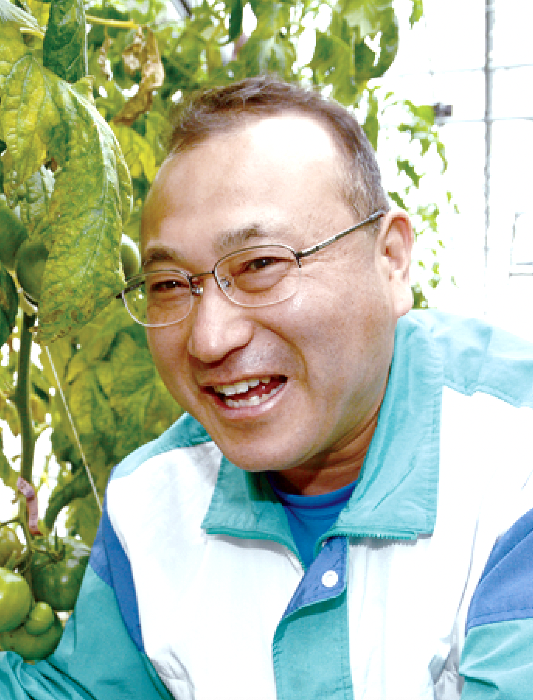

主な夏秋作型向け
トマト品種の特性
夏秋取りトマトの品種選びと最新動向

野菜花き品種育成研究領域 領域長
近年、夏期の気温が非常に高く推移しており、今年度（2025年）の夏の平均気温は平年と比べて2.36度高く、異常気象と呼ばれる状況が続いている。このような気象状況は、夏期のトマト生産に大きな影響を与えており、着果不良、障害果の発生、果実の肥大不足、青枯病の多発などが懸念される。
品種選びのポイント
着果不良
着果不良が生じる主な原因として、高温による花粉稔性（ねんせい）の低下が挙げられる。トマトの花粉は25度を超えると稔性が低くなり、30度以上になると極端に低下し、着果不良が多発する。
この着果性を改善するために、細霧冷房、遮光カーテン、遮光塗料などの活用が効果的であるが、高温期の着果性に優れた品種の選択も重要である。近年、高温期の着果性が優れた品種も開発されており、各種苗会社のコメントを参考にして、栽培する品種を選択したい。
障害果の発生
高温時に発生が懸念される障害果として、日焼け果、裂果、尻腐れ果などが挙げられる。
日焼け果は果実が葉に隠れるように整理する、裂果は給水量の急激な変化を避ける、尻腐れ果はカルシウムを多施用し十分な水分を供給するなどの対策があるが、裂果と尻腐れ果は相反する対応が求められるため、日々の適切な栽培管理が重要になる。
近年は、これら障害に対して強い耐性を持つ品種が開発されており、本紙に掲載されている情報を有効に活用したい。また、以前は問題が大きかったミニトマトの裂果についても、耐裂果性を持つ品種が多く開発されているので、こちらも各社のコメントを参考にしたい。
果実の肥大不足
高温期には葉からの蒸散が活発になるため、茎葉に流れる水分は多くなるが、果実に供給される水分が少なくなり、小果が増加する。
そのため、果実肥大性の優れた品種を選択したいが、その場合、既述のように裂果の発生が懸念される。最近ではこの両形質とも優れた品種も開発されつつあるので注目したい。
青枯病対策
青枯病は、高温時に発生しやすい土壌病害で、夏秋期のトマト栽培では被害が最も大きな病害の一つである。
青枯病対策として、還元消毒や太陽熱消毒などの土壌消毒は一定の効果が認められるが、抵抗性台木用品種への接ぎ木が有効な手段とされている。近年開発されたトマト台木用品種の中には、青枯病抵抗性がかなり強い品種もあるため、青枯病の被害に悩んでいる栽培地では、適切な土壌消毒を施した上、強い青枯病抵抗性を示す台木用品種を選びたい。
なお、種苗メーカー各社は、台木用品種の青枯病抵抗性強度をランク付けしていることが多いので、その情報も参考にしたい。